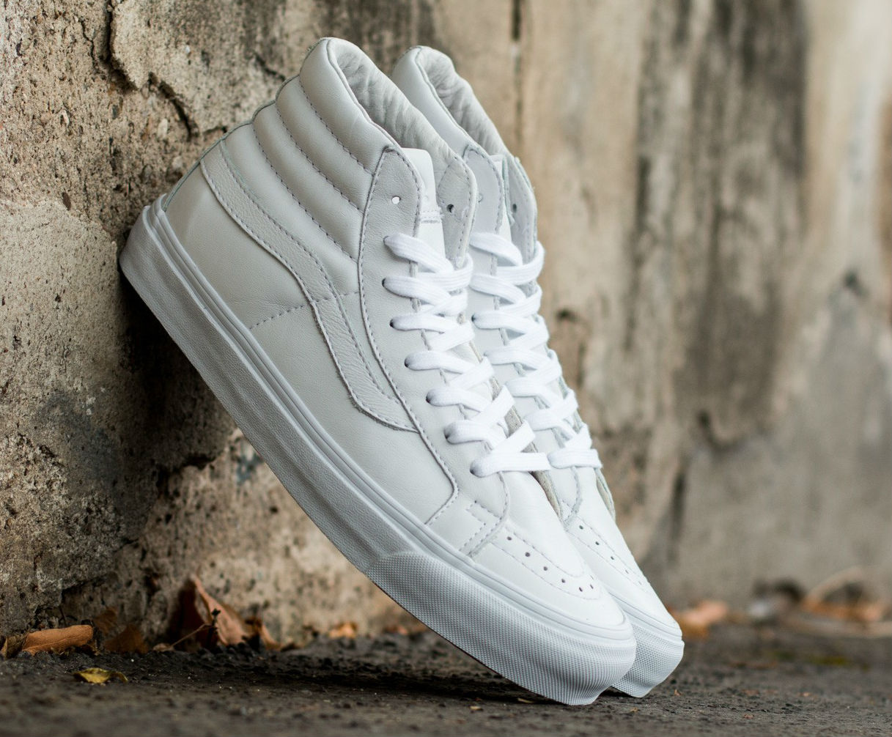

vans off the wall
History of Vans
 Vans were first seen in 1966 by two brothers, Paul Van Doren & James Van Doren. These brothers set out for a chance to start their own business in Anaheim, California. Later on, this business was named The Van Doren Rubber Company , here they manufactured shoes and sold them directly to the public. The first sale made at this store were to 12 customers who bought their authentic #44 Deck shoes. Towards the early 70s skateboarders who liked Vans starting making them more common all over Southern California. The debut of the Vans "Off The Wall" logo appears in 1976 after the making of #95 Era vans were made. By the end of the 70s, Vans had roughly 70 stores in California with buyers nationally and internationally.
Vans were first seen in 1966 by two brothers, Paul Van Doren & James Van Doren. These brothers set out for a chance to start their own business in Anaheim, California. Later on, this business was named The Van Doren Rubber Company , here they manufactured shoes and sold them directly to the public. The first sale made at this store were to 12 customers who bought their authentic #44 Deck shoes. Towards the early 70s skateboarders who liked Vans starting making them more common all over Southern California. The debut of the Vans "Off The Wall" logo appears in 1976 after the making of #95 Era vans were made. By the end of the 70s, Vans had roughly 70 stores in California with buyers nationally and internationally.
SK8-HI VANS

The Sk8-Hi closely followed the old school look in 1978 and was the second design to show off a sidestripe. Its style and above-the-ankle padding took skate shoes to the next level. In the decade since, the Sk8-Hi has since become a wear everywhere and an enduring symbol of street culture. This is by far my favorite shoe that the Vans company produces. I love the simiilarity to the hightop converse and how each could be worn on several occasions or go with several outfits. The adversity of the shoe and the comfort make this a number one choice along with the variety of color combinations.
Old Skool VANS
 The Old Skool Vans are the classic skate shoe and the first to bare the iconic side stripe. With a low-top lace-up silhouette, durable canvas, metal eyelets, padded tongue and lining. If I had to choose a low-top pair of vans these would be my first choice due to the flexibility in outfits you can wear them with, comfort, and the amount of colors you can get them in. These shoes are very similar to the Sk8-Hi, but are a lot more subtle and don't scream "skater".
The Old Skool Vans are the classic skate shoe and the first to bare the iconic side stripe. With a low-top lace-up silhouette, durable canvas, metal eyelets, padded tongue and lining. If I had to choose a low-top pair of vans these would be my first choice due to the flexibility in outfits you can wear them with, comfort, and the amount of colors you can get them in. These shoes are very similar to the Sk8-Hi, but are a lot more subtle and don't scream "skater".
5 REASONS WHY VANS IS A GREAT COMPANY
- Comfort & Style: This company has always been dedicated to creating footwear that gives their buyers comfort and flexibility. Over the years they have developed Ultra Cush soles for a lighter and comfortable shoe.
- Culture: Being a family owned business has promoted the family-friendly events and lifestyle.
- The US Open & Vans Warped Tour: The Vans US Open is a free family event that promotes an active lifestyle with skating, surfing, and BMX. These events sponsored by Vans are interactive and helps the sports get more exposure. The Vans Warped Tour is a summer concert festival series that travels all over North America.
- Art Showcasing: It's not all about the shoes, it's about the way the buyers express themselves. Vans has art contests that allow customers to customize their own shoes while promoting art and individuality.
- Positive Vibe Warriors: This foundation has a goal to connect youth to the ocean and educate them about the environment. Vans launched a campaign with Positive Vibe Warriors that included clothing, shoes, and accessories.